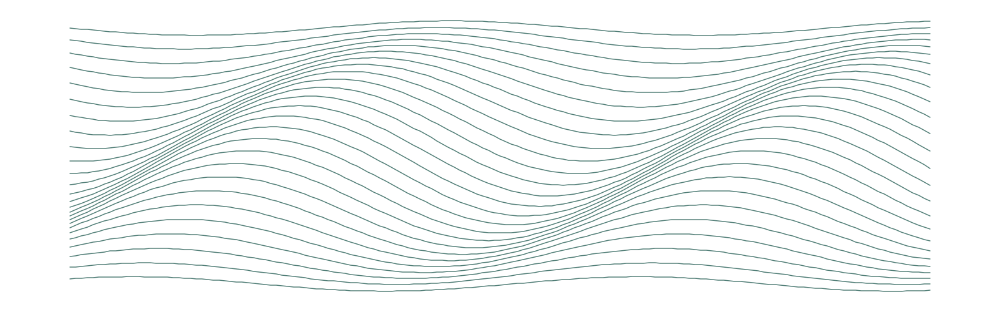

Responsabilidade civil
A Súmula 479 e o que ela não alcança
Onde termina o fortuito interno, segundo os próprios tribunais que o aplicam.
30 de agosto de 2026Bruno Hardt

O enunciado é curto, e a jurisprudência que o aplica, extensa. A Súmula 479 do Superior Tribunal de Justiça diz que as instituições financeiras respondem objetivamente pelos danos gerados por fortuito interno relativo a fraudes e delitos praticados por terceiros no âmbito de operações bancárias.
Enunciado
As instituições financeiras respondem objetivamente pelos danos gerados por fortuito interno relativo a fraudes e delitos praticados por terceiros no âmbito de operações bancárias. (SÚMULA 479, SEGUNDA SEÇÃO, julgado em 27/06/2012, DJe 01/08/2012)
São trinta e três palavras, e elas resolvem a parte da discussão que quase nunca decide o caso. É raro que a defesa sustente responsabilidade subjetiva: o réu concede o enunciado e ataca o nexo causal. A operação partiu do próprio consumidor, com a senha dele, no aparelho dele - e a culpa exclusiva da vítima, prevista no art. 14, § 3º, II, do Código de Defesa do Consumidor, afasta o dever de indenizar.
A discussão útil não é, portanto, sobre o que a súmula diz. É sobre onde ela para. O que segue são três lugares em que os tribunais têm traçado esse limite. Nenhum deles está escrito como exceção em lugar nenhum: são fronteiras de prova, e é por isso que casos com a mesma aparência terminam de modos opostos.
A primeira fronteira: a engenharia social
Golpe por telefone, falso funcionário, transferência autorizada pela própria vítima. É a hipótese em que a mesma conduta é lida de duas maneiras incompatíveis - e as duas leituras convivem dentro do mesmo tribunal.
De um lado, a fraude por engenharia social é fortuito interno. O fraudador se vale da estrutura do banco, a operação atípica atravessa o monitoramento sem ser barrada, e quem oferece um meio de pagamento instantâneo assume o risco do empreendimento que o oferece. A vulnerabilidade do consumidor impede que se exija dele a mesma perícia em segurança que se exige da instituição.
Ementa (trecho)
DIREITO DO CONSUMIDOR E PROCESSUAL CIVIL. AGRAVO INTERNO NO RECURSO ESPECIAL. AÇÃO DE INDENIZAÇÃO POR DANO MORAL. FALHA NA PRESTAÇÃO DE SERVIÇOS. RESPONSABILIDADE OBJETIVA DE INSTITUIÇÃO FINANCEIRA. GOLPE DE ENGENHARIA SOCIAL. TRANSAÇÕES ATÍPICAS. FALHA NO DEVER DE SEGURANÇA. RISCO DA ATIVIDADE. RECURSO PROVIDO. I. Caso em exame1. Agravo interno interposto contra decisão monocrática que não conheceu do recurso especial, com fundamento no art. 932, III, do Código de Processo Civil, art. 253, parágrafo único, I, do Regimento Interno do Superior Tribunal de Justiça, e Súmula n. 7 do Superior Tribunal de Justiça. […] 7. A excludente de responsabilidade por culpa exclusiva da vítima, prevista no art. 14, § 3º, II, do Código de Defesa do Consumidor, deve ser interpretada restritivamente, caracterizando-se apenas quando o consumidor é o único responsável pelo evento danoso, sem qualquer contribuição causal da falha do serviço. 8. A fraude praticada por terceiros, mesmo que por meio de engenharia social, insere-se no risco do empreendimento, sendo dever da instituição financeira fornecer mecanismos de segurança capazes de detectar e bloquear transações atípicas. 9. A vulnerabilidade do consumidor na relação de consumo, conforme o art. 4º, I, do Código de Defesa do Consumidor, impede que se exija dele a mesma expertise em segurança que se exige da instituição financeira. 10. O nexo causal entre a falha do serviço bancário, caracterizada pela ausência de bloqueio de operações atípicas, e o dano sofrido pela consumidora é evidente, não sendo possível transferir integralmente o risco da atividade bancária ao consumidor. Ao disponibilizar meios de pagamento ágeis, a instituição financeira assume os riscos do empreendimento.IV. Dispositivo11. Agravo interno provido para conhecer e dar provimento ao recurso especial, reformando o acórdão recorrido e restabelecendo a sentença de primeiro grau que condenou a instituição financeira à reparação dos danos.
De outro, o consumidor que entrega senha e dispositivo é o único responsável pelo resultado. As operações partiram de credencial legítima, não houve defeito na prestação do serviço, e sem defeito não há o que a súmula alcance.
Ementa (trecho)
DIREITO DO CONSUMIDOR. RECURSO ESPECIAL. FRAUDE BANCÁRIA POR ENGENHARIA SOCIAL COM TRANSAÇÕES VIA PIX. EXCLUDENTE DE RESPONSABILIDADE POR CULPA EXCLUSIVA DO CONSUMIDOR. RECURSO ESPECIAL PROVIDO. I. CASO EM EXAME1. Recurso especial interposto contra acórdão em apelação cível, provido para reconhecer a ilicitude das operações e condenar o banco à restituição de valores, afastando dano moral. […] 8. Afasta-se a aplicação da Súmula n. 479 do STJ, por inexistir falha do sistema bancário, e confirma-se a orientação dos precedentes que atribuem ao consumidor o ônus de demonstrar negligência do banco quando as transações se dão com cartão/senha ou credenciais legítimas.IV. DISPOSITIVO E TESE7. Recurso especial provido.Tese de julgamento: " 1. Incide a excludente do art. 14, § 3º, I e II, do CDC quando a fraude decorre de engenharia social e as transações são realizadas com senha e dispositivos legítimos do consumidor, caracterizando fortuito externo e rompendo o nexo causal. 2. Não se aplica a Súmula n. 479 do STJ quando inexistente defeito do serviço bancário ou violação dos sistemas de segurança, cabendo ao consumidor comprovar negligência do banco nas operações contestadas."Dispositivos relevantes citados: CDC, arts. 14 § 1, § 3 I, II; CC, art. 927.Jurisprudência relevante citada: STJ, Súmula n. 479; STJ, Recurso especial n. 1.633.785/SP, relator Ministro Ricardo Villas Bôas Cueva, Terceira Turma, julgado em 24/10/2017; STJ, Agravo em recurso especial n. 2.062.316/RJ, relator Ministro Marco Buzzi, Quarta Turma, julgados em 31/3/2022; STJ, Agravo interno no recurso especial n. 2.045.629/SP, relator Ministro Ricardo Villas Bôas Cueva, Terceira Turma, julgado em 23/11/2023.
Os dois acórdãos são do Superior Tribunal de Justiça, e foram julgados com sete dias de diferença: a Quarta Turma em 9 de março de 2026, a Terceira em 16. Nenhum revogou o outro, e não há tese firmada em repetitivo sobre o tema.
A tentação é chamar isso de divergência e parar por aí. Mas a fórmula da Quarta Turma traz a própria porta de saída: a Súmula 479 é afastada quando inexistente defeito do serviço. Isto é, o critério continua sendo o defeito - e a pergunta que resta é probatória, não interpretativa. Onde se demonstrou que o sistema deixou passar o que deveria ter barrado, há defeito. Onde nada se demonstrou sobre o sistema, sobra a senha correta, e a senha correta é do consumidor.
A segunda fronteira: o dispositivo autorizado
A segunda fronteira aparece quando a operação parte de aparelho já cadastrado, com autenticação biométrica no acesso, sem troca de dispositivo, sem elevação de limite e sem nada que destoe do uso ordinário da conta. Há turma recursal decidindo que, nesse cenário, quem autorizou a transação foi a vítima, e que a responsabilidade objetiva não transforma o banco em segurador universal.
Ementa (trecho)
RECURSO INOMINADO. AÇÃO DECLARATÓRIA DE INEXISTÊNCIA DE DÉBITO C/C INDENIZAÇÃO POR DANOS MATERIAIS E MORAIS. GOLPE DA FALSA CENTRAL DE ATENDIMENTO. TRANSFERÊNCIA ÚNICA REALIZADA VIA PIX PELO PRÓPRIO APLICATIVO, COM RECONHECIMENTO FACIAL E SENHA PESSOAL, EM APARELHO AUTORIZADO. AUSÊNCIA DE FALHA NA PRESTAÇÃO DO SERVIÇO OU DE SEGURANÇA. OPERAÇÃO AUTENTICADA PELO USUÁRIO. ADOÇÃO DO MECANISMO ESPECIAL DE DEVOLUÇÃO (MED) E DEMAIS DILIGÊNCIAS CABÍVEIS. FORTUITO EXTERNO E CULPA EXCLUSIVA DA VÍTIMA E DE TERCEIRO. INAPLICABILIDADE DA SÚMULA 479/STJ. INEXISTÊNCIA DE NEXO CAUSAL ENTRE A CONDUTA DO BANCO E O DANO. SENTENÇA REFORMADA. RECURSO CONHECIDO E PROVIDO. I. CASO EM EXAME1. A autora alega ter recebido ligação de terceiro que se passou por atendente da instituição financeira e, induzida a seguir supostos procedimentos de segurança, acabou autorizando, dentro do próprio aplicativo da instituição, transferência via Pix utilizando o limite de crédito, no valor de R$ 4.456,00, posteriormente identificada como fraude. […] 8. A análise do conjunto probatório revela que o evento danoso decorreu de fraude praticada por terceiro, sem qualquer participação ou omissão da instituição financeira. Ainda que a autora tenha sido vítima do golpe, as transações foram autorizadas por ela própria, mediante reconhecimento facial e senha pessoal, atos que configuram autorização inequívoca sob o ponto de vista técnico e jurídico. 9. Nesse contexto, não há que se cogitar de análise acerca do perfil de consumo ou da atipicidade da operação, uma vez que a transferência foi efetivada por meio regular dos mecanismos de segurança disponibilizados pela instituição — acesso ao aplicativo instalado no próprio aparelho da consumidora, digitação de senha pessoal e autenticação facial. Tais circunstâncias evidenciam que a operação foi validamente autorizada pela titular da conta, afastando a incidência de qualquer dever adicional de bloqueio preventivo. Assim, demonstrada a adoção de todas as etapas de autenticação exigidas pelas normas do Banco Central, não se configura falha na prestação do serviço. 10. Ressalta-se que o Superior Tribunal de Justiça firmou entendimento no sentido de que a utilização de conta bancária por terceiro fraudador não implica responsabilidade automática da instituição financeira, desde que esta comprove ter observado as exigências de identificação previstas na Resolução BACEN nº 4.753/2019 (REsp n. 2.208.836/SP, relator Ministro Ricardo Villas Bôas Cueva, Terceira Turma, julgado em 23/6/2025, DJEN de 30/6/2025). […]
O argumento é forte, e por isso convém saber exatamente do que ele depende. Biometria para abrir o aplicativo não é biometria na transação; dispositivo cadastrado há dois anos não é dispositivo cadastrado na véspera; e uma conta que nunca operou acima de determinado valor não deixa de ser atípica porque o login foi regular. A defesa costuma tratar os três como se fossem um só fato. São três, e cada um se prova em separado.
A terceira fronteira: a inércia depois do alerta
Comunicada a fraude, o que a instituição faz nas horas seguintes já não é fortuito. Deixar de acionar o Mecanismo Especial de Devolução em tempo útil, ou seguir cobrando o débito depois de registrada a contestação, é conduta própria e atual, praticada por quem tinha o dever e os meios de agir.
Ementa
RECURSO INOMINADO. BANCÁRIO. GOLPE DA FALSA CENTRAL DE ATENDIMENTO. TRANSFERÊNCIA VIA PIX PARA CONTA MANTIDA JUNTO À INSTITUIÇÃO FINANCEIRA RECEBEDORA (PAGSEGURO). COMUNICAÇÃO IMEDIATA DA FRAUDE PELO CONSUMIDOR. INÉRCIA E ATRASO INJUSTIFICADO NO ACIONAMENTO DO MECANISMO ESPECIAL DE DEVOLUÇÃO (MED). FALHA NA PRESTAÇÃO DO SERVIÇO CONFIGURADA. RESPONSABILIDADE DECORRENTE DA OMISSÃO DA INSTITUIÇÃO EM DILIGENCIAR O BLOQUEIO E A TENTATIVA DE ESTORNO. DANO MATERIAL DEVIDO. DANO MORAL CONFIGURADO. SITUAÇÃO QUE ULTRAPASSA O MERO DISSABOR DO COTIDIANO. QUANTUM FIXADO EM R$ 2.500,00 (DOIS MIL E QUINHENTOS REAIS) MANTIDO, EIS QUE EM OBSERVÂNCIA AOS PRINCÍPIOS DA RAZOABILIDADE E PROPORCIONALIDADE. SENTENÇA MANTIDA POR SEUS PRÓPRIOS FUNDAMENTOS. ART. 46 DA LEI N. 9.099/1995. Recurso conhecido e desprovido.
Esta é, na prática, a fronteira mais útil, porque não depende de vencer a discussão sobre o golpe. Ainda que se conclua que a vítima concorreu para a fraude - e às vezes se conclui -, a omissão posterior tem autor e causa próprios. São duas falhas, e a segunda sobrevive à absolvição da primeira.
Onde a prova mora
Nas três fronteiras, a palavra que decide é atípica. E atipicidade não é impressão: é comparação. Não basta afirmar que a operação destoava do perfil do cliente; é preciso dizer de que perfil ela destoava, e em quê.
Ementa
EMENTA: RECLAMAÇÃO. RECURSO INOMINADO. AÇÃO DE INDENIZAÇÃO POR DANOS MATERIAIS E MORAIS. SÚMULA 479 DO STJ. VIOLAÇÃO CONFIGURADA. GOLPE DO PIX. FORTUITO INTERNO. RESPONSABILIDADE DA INSTITUIÇÃO FINANCEIRA. FALHA NO DEVER DE SEGURANÇA. ACÓRDÃO RECLAMADO EM DESCONFORMIDADE COM ENTENDIMENTO SUMULADO. PRECEDENTES DO STJ. RECLAMAÇÃO PROCEDENTE. 1. Demonstrada a divergência entre o acórdão prolatado por Turma Recursal Estadual e o entendimento consolidado no âmbito do Superior Tribunal de Justiça, inserto na Súmula 479 do STJ, a Reclamação deve ser provida. 2. A ausência de procedimentos de verificação e aprovação para transações atípicas via pix e que aparentam ilegalidade corresponde a defeito na prestação de serviço decorrente de fortuito interno. 3. Nas fraudes e golpes de engenharia social, várias operações de alto valor são realizadas em rápida sucessão. Essas transações se destacam devido a esse comportamento incomum, e os bancos têm o dever de identificá-las. 4. A fragilidade do sistema bancário representa uma falha na segurança das instituições financeiras ao permitir que os golpes causem prejuízos financeiros às vítimas. 5. É dever das instituições financeiras implementar medidas para impedir transações atípicas e ilegais, comparando-as com o histórico do cliente em relação a valores, frequência e propósito. Precedentes do STJ. RECLAMAÇÃO PROCEDENTE.
O critério que o acórdão fixa é esse, e é curto: valor, frequência e propósito, comparados com o histórico do cliente - mais o comportamento que várias operações de alto valor em rápida sucessão desenham por si mesmas.
O resto é trabalho de quem redige a inicial, e convém não apresentá-lo como se fosse texto de julgado. Fracionamento logo abaixo de um limite conhecido, horário fora do padrão de uso da conta, destinatário sem qualquer relação anterior, consumo integral do limite disponível: nenhum desses indícios decide sozinho, e nenhum deles está num enunciado. Juntos, descrevem um comportamento que o sistema de monitoramento existe para reconhecer - e o que se discute é por que ele não reconheceu.
Do outro lado, o mesmo raciocínio impõe uma disciplina ao autor. Alegar atipicidade sem juntar o extrato dos meses anteriores é pedir ao juízo que presuma o histórico que só uma das partes tem. O extrato é do consumidor, e ele pode juntá-lo.
Por que o limite importa mais que a regra
Citar a Súmula 479 é o começo da petição, não o seu argumento. O enunciado é concedido pela defesa na primeira linha da contestação, e a partir dali a causa se decide por outra coisa: pelo extrato, pelo horário, pelo rol de indícios de atipicidade, pelo prazo de resposta ao alerta, e pelo que a instituição não juntou aos autos quando era ela quem podia juntar.
Há um efeito colateral disso que vale registrar. Como as fronteiras são probatórias, e não interpretativas, a mesma tese ganha e perde conforme o que se produziu - o que significa que ler a jurisprudência pelo dispositivo, sem ler o que cada acórdão diz ter havido nos autos, é o modo mais rápido de recolher precedentes que não sustentam o caso que se tem em mãos.